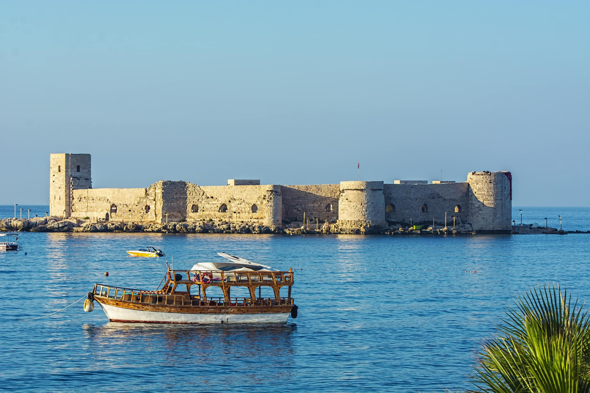
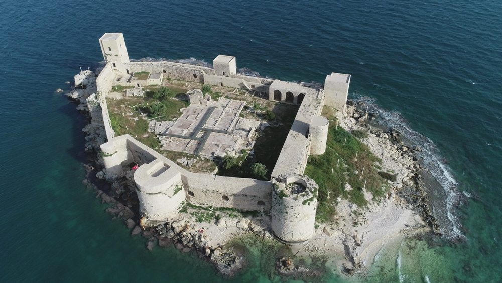
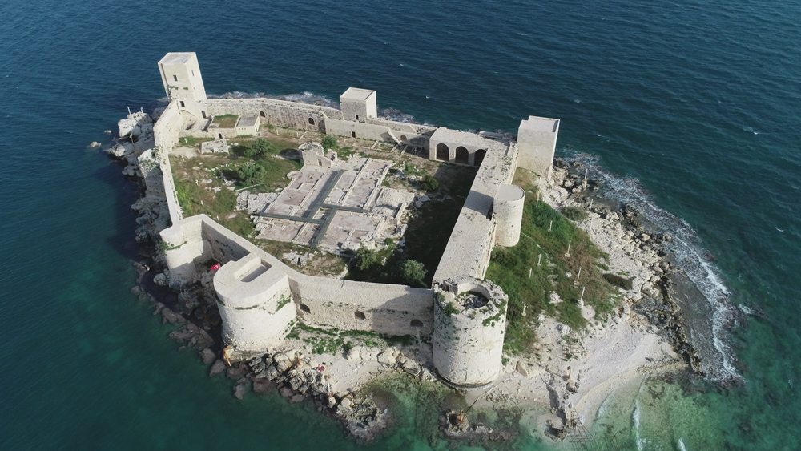

Korykos adı ile de anılan Kızkalesi, Mersin’de yer alan en önemli turizm merkezlerinden biridir. Herodotos’a göre yerleşim yerinin Korykos adında Kıbrıslı bir prens tarafından kurulduğu dile getiriliyor. Tarihsel süreç içerisinde Selçuklular, Ermeniler, Fransızlar, Selevkoslar, Romanlar, Karamanlar ve Osmanlılar gibi birçok farklı egemenliğin hakimiyeti altına giren köy, M.Ö. 400 lere kadar uzanan köklü bir geçmişe sahip. Kalenin yapımının iste 1199 yılında yaptırıldığı düşünülüyor. I. Leon tarafından yaptırıldığı düşünülen Kız Kalesi, Roma döneminde korsanların kullandığı bir barınak olma özelliğine de sahip. Kendine ait farklı mimarisi ile dikkat çeken ve turistler tarafından yoğun ilgi gören kale, hem yerli hem de yabancı turistler tarafından özellikle yaz aylarında adeta akına uğruyor.
 
